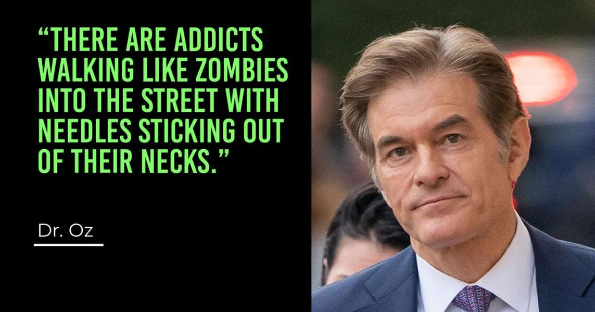

Mobile uploads
Dr. Oz was quoted as saying this about homeless people in Philadelphia.
I don’t really care that he’s an ignorant asshole.
What’s the solution?
He’s running for Senate as a Republican. They like to say these things to take jabs at Democrats who run these cities. But just getting them out of sight is not a solution.
So far, Donald Trump is the only guy with a real solution: camps on the outskirts of cities. This is the immediate triage that needs to happen tonight.